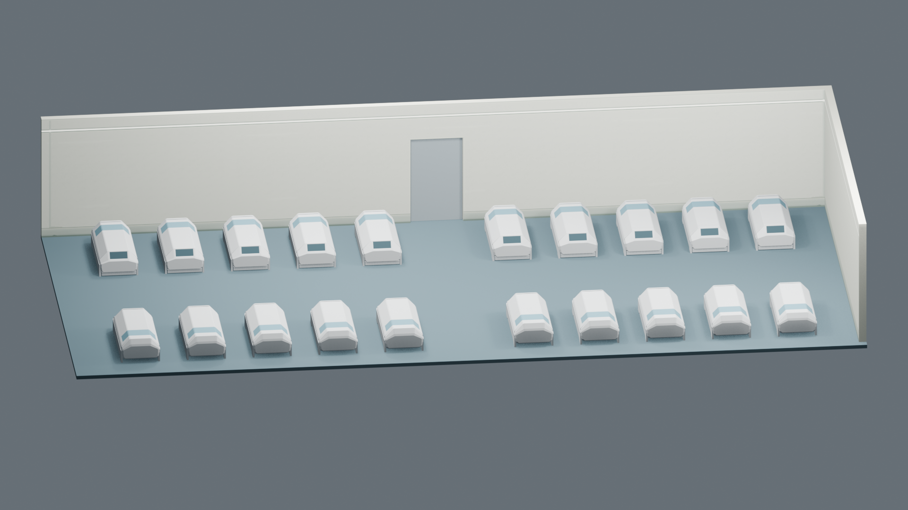
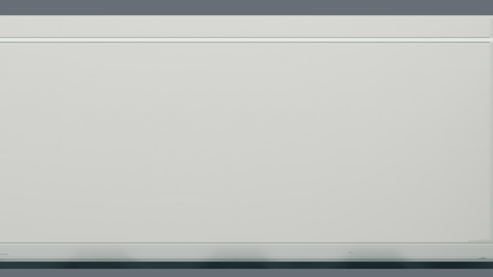
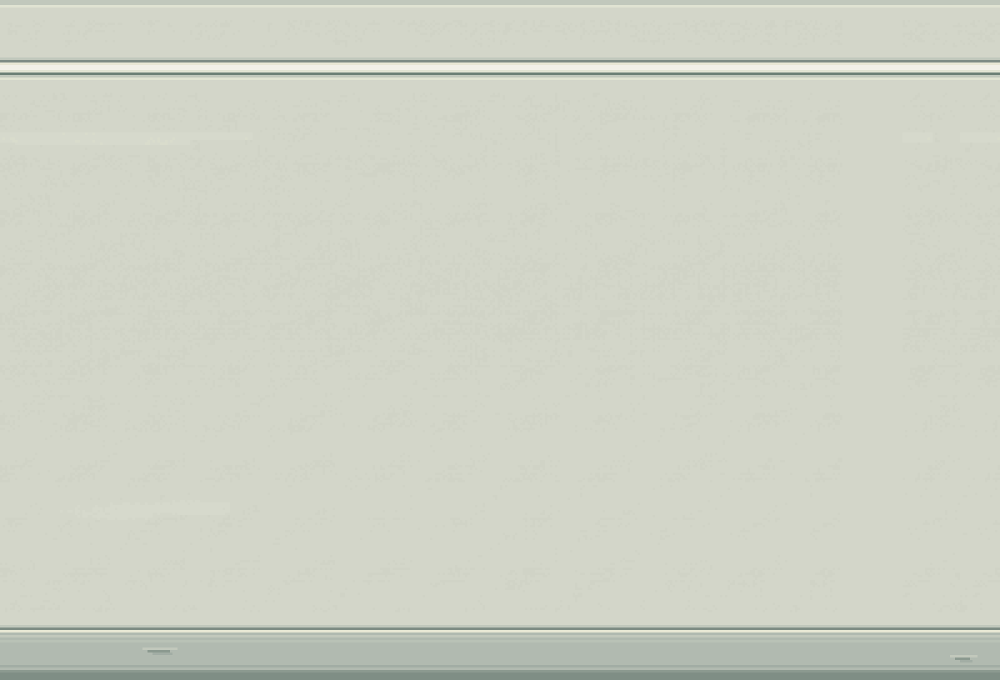
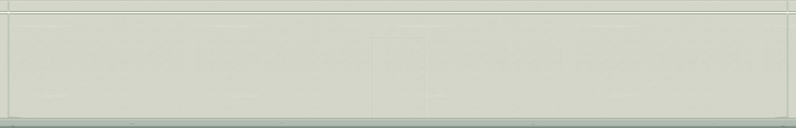

Room 1 / 墙面像素贴图候选 v1
哑光矿物／陶瓷复合墙面 · 下沿金属保护带 · 上部连续低亮灯带。墙角与下沿保留有限的长期老化，文字标识下一轮确认。
主色 #D3D6C9亮部 #E7E7D4暗部 #C1C8BC
同镜头对比
低角度

正面材质近景

原生像素材料 / 最近邻3倍

后墙连续展开图

地板、舱体、门与房间几何沿用。灯带已分离发光遮罩；当前保留原审查灯光，最终应急环境照明仍待后续实现。PixelLab Pro 原创底图编辑实际使用15次订阅额度，已保留原始结果和可编辑源文件。